Layers, Containers and Interfaces
Table of Contents
Introduction
When designing a Ventuz scene, certain combinations of nodes or design patterns occur over and over again. For example, user interface elements like buttons or sliders are designed once and then used throughout the presentation to create a consistent look and feel. The only aspects that change are perhaps the size, position and label.

Another common theme when designing complex presentations is that there is some semantic structure to the scene. There might be a certain subtree of the scene that is responsible for presenting the user interface, another for talking to external devices, yet another for rendering a collection of images. Having all of those nodes in one visual space is not only confusing but outright unnecessary.
In both cases, Container Nodes improve productivity as they enable the author to combine nodes to a new customized type of node. Picking up on the UI button example above, a button may require a geometry, multiple textures, keyframe animations and much more. All of those nodes can be put into one container, thus having the container act as a single node representing the button. The individual nodes are hidden from the main hierarchy level making the scene easier to understand and instead of duplicating the subtree, only the "button node" needs to be duplicated.
Creating a Container
A new container is created in the same way as all other nodes, by dragging the Hierarchy or Content Container to the respective part of the scene. Since this is a very generic node and a scene often contains different containers, it is advisable to give it an appropriate name right away by double clicking on the name of the node. It can even be assigned a new icon by selecting the node and then choosing Node/Icon/Open in the main menu bar. Nodes can be added to a Container by cutting them from the hierarchy, navigating into the Container and then pasting them or just create them inside the Container directly.
Merge to Container
An alternative way is to select a node and then use Node/Merge To Container from the main menu bar. This will replace the selected subtree with a container and place the removed nodes inside the container.
Next to merging a selection to a Hierarchy Container it is also possible to merge content nodes to Content Container.
There are basically four different ways of merging:
- Selection in Hierarchy Editor
- A single Hierarchy Node is selected with children.
If all selected nodes (including value suppliers) are only connected to this partial tree - the merge is performed and a new Hierarchy Container is created
- A single Hierarchy Node is selected with children.
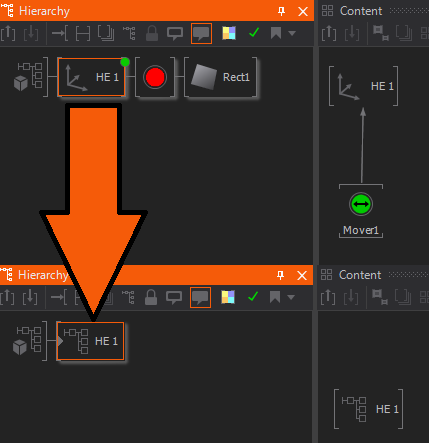
- A single HE node is selected without children click +CTRL.
Only the single HE node is merged with all its suppliers - a new Hierarchy Container is inserted at the previous location. The icon of the previously selected HE node is exposed. Outputs and multi-links are maintained.
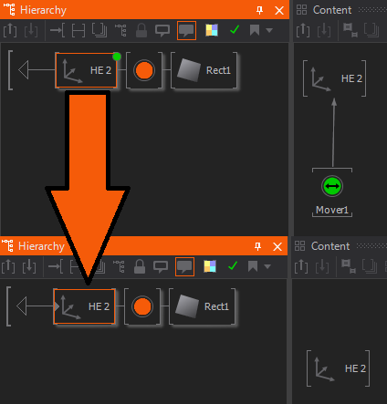
- Selection in Content Editor
- Only CE nodes are selected.
All nodes are merged into a new Content Container. Bindings that pointed outside the selection are re-created by new exposings.
- Only CE nodes are selected.
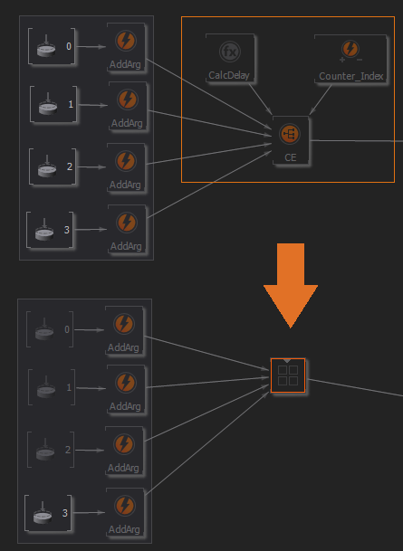
- A single HE node is selected and optional one or multiple CE nodes.
Basically the same as Selection in Hierarchy Editor (2) (above) but only the selected CE nodes are merged. Bindings that pointed outside the selection are re-created by new exposes and the icon of the previously selected HE node is exposed.
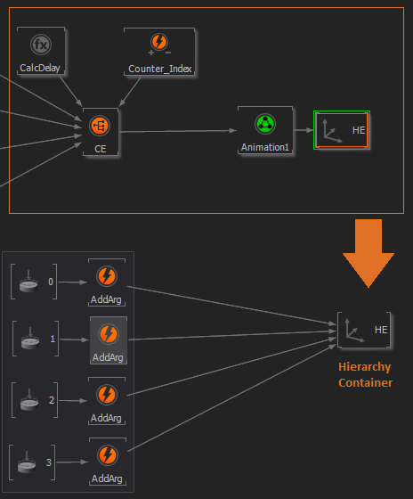
Navigation
All container nodes can be easily recognized by their gray triangle on the left inside of the node icon. By double clicking on that triangle or pressing ENTER, the editor leaves the current hierarchy level and switches to the inside of the container. When inside a container, the starting point of the hierarchy is not the familiar scene root T-junction, but the container root, a white triangle. Double clicking on that icon or pressing BACK takes the Hierarchy Editor out of the current container. You can also use the Container Level Up Button or press CTRL + U and Level Down Button or CTRL + D to navigate through the container levels. Pressing inside the Hierarchy Editor will display a popup window with the Hierarchy Container structure of the complete scene. This overview can also be used for navigation; just click on the desired container. A very comfortable way to enter and leave containers is to use the click
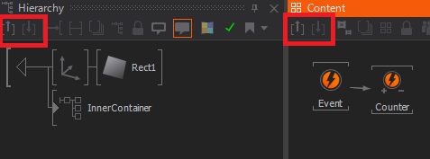
Outputs
By default, a Hierarchy Container is created with one Output Node already inside of it. An Output represents a connection back up to the parent hierarchy level and allows nodes or subtrees to be placed behind the Container.
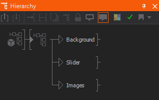
Inside the Container, the Output nodes represent all nodes behind the container on the parent level. This can be used to encapsulate some functionality inside a Container while leaving a degree of freedom to the user of the Container. As an example, consider someone constructing an animated picture frame inside a container. All the geometries, textures and so on that directly contribute to the frame are inside the Container, but the content that should be rendered inside the frame are kept out of it. This improves reusability and avoids forcing the user to step into the container every time the framed content is to be changed.
Exposing Properties
While a Container or Layer is primarily designed to hide the complexity of its implementation, there are usually some properties of the encapsulated nodes that need to be adjustable from outside the Container. A button may allow the user to change its color and label, a movie player my require a file name to work correctly and so on.
Any input or output property of a node inside a Layer or Container can be made available on the outside as a property of the Container itself by exposing it.
To expose a property, click on the name of the property in the Property Editor and choose Expose/Edit... from the appearing context menu. The name and category of the property, as it appears on the Layer or Container, can either be kept the same as on the original node or be reassigned in the dialog that opens. Press OK and the square to the left of the property name will change to green, symbolizing that this is now an exposed property. Note that exposed property names have to be unique within a container. Exposing two properties with the same name will not only confuse other Ventuz operators but can also disrupt the binding logic.
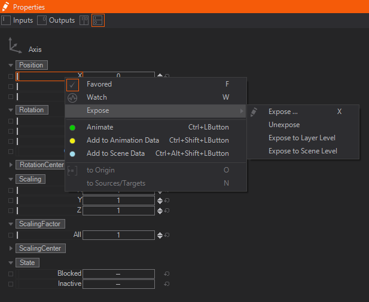
To quickly expose a property without changing its name or category, click the small square to the left of the property. To quickly "un-expose" a property, click on the square. A double-click will bring up the Expose dialog.
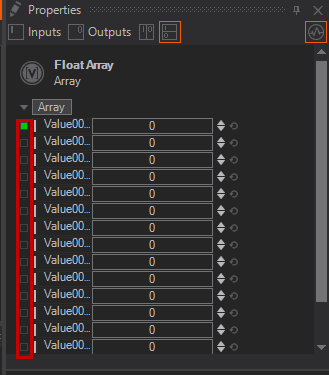
Since Ventuz 5 we introduced a new level in the Scene with Layers. To make exposing a little more handy properties can be exposed to Layer Level or Scene Level directly from the context menu. Pressing the on a category also allows exposing all properties inside that category to a certain level in the scene or to Scene Data to control them from Ventuz Director.
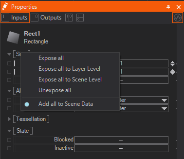
Exposed input and output properties of a Layer or Container can be seen either when selecting the node on its parent level or by going into the Layer or Container and deselecting everything.
Property Tabs
With Ventuz 6.6 we introduced Property Tabs. These allow to sort your properties into custom tabs.
To do this simply doubleclick the expose button and a new window will pop up.
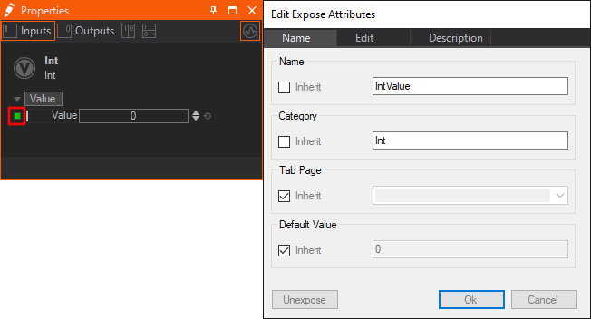
If inheriting is enabled the exposing will appear on the same tab like the exposed property. To change that uncheck the according checkbox. When changing the name you can also use the dropdown to choose from a list of already present property tabs of the current container.
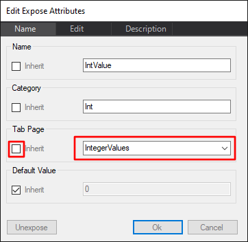
After typing in the name of the tab you can hit OK, and now you can find the new tab on the top of the Properties Editor at the according container.
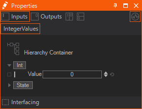
If you want to add multiple exposed parameters to one tab, you need to expose the needed properties on the node itself first. Then jump up one level and mark all of them with shift + Left click .
Right click one of the selected items and add them to an existing tab, create a new one or even remove it from the current tab. 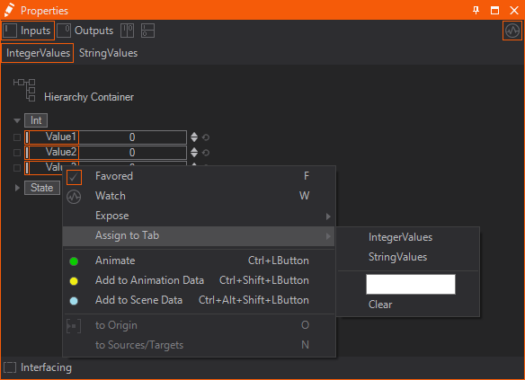
This only works on selections on the container/layer - not on the exposing node itself.
The selected tab will always be highlighted in Orange.
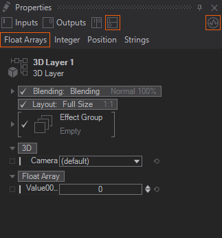
Data items with no allocated tab, will be always displayed. Regardless of the tab selected.
Hidden number Sorting
It is also possible to sort these Property Tabs by hidden numbers instead of the Alphabet.
To do this you only need to name your Tabs by starting with a number. This number will not be displayed.
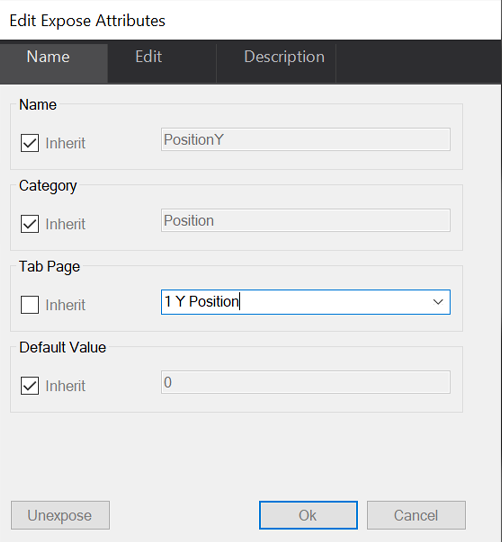 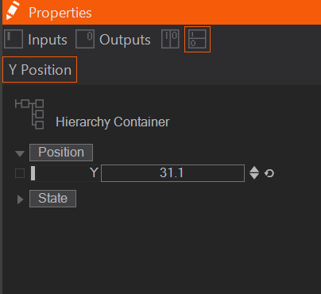
This number will keep the Property Tab up front. Even if we add another tab that is starting with an A for example.

Layers as Containers
Layers are a special kind of Containers. They can only be placed on the Layer Level - the highest Level of the Scene which can be accessed in the Layer Editor - and thus have no hierarchical relation like Hierarchy Containers. Inside each Container there you can place Content and Hierarchy Nodes and expose their properties like you can do with Hierarchy and Content Containers. To get inside a Layer you have to click the Pencil-Icon on the corresponding Layer. By just clicking the Layer itself you select it like any other Container and make it visible inside the Content Editor to be able to bind its Exposed Properties to other Content Nodes' or Layers' Outputs.
3D Layers work similar to a Hierarchy Container - they have an inner Hierarchy tree that gives instructions to the Renderer. Since Layers do not lie in a Hierarchy themselves they cannot use Output Nodes. All other Layers (except for Layer Groups, Switches and the Photoshop Import) work similar to a Content Container. They have no inner hierarchy but a network of Content Nodes.
Each Layer has a Root Node which is placed inside the Layer and cannot be removed. A 3D Layer's Root Node is found at the very top-left of the Hierarchy Editor. A 2D Layer's Root Node is always visible in the Content Editor and has no horizontal brackets (like Content Nodes) but only their corners around its icon. A Root Node's properties can be bound and exposed like of any other Node as well. Some of its properties are exposed by default, some other need to be exposed manually to make them accessible from outside.
Also Layers cannot be placed inside a Container (since they have to be located on the Layer Level) and therefore you cannot merge them to a Container. For this purpose, there are Layer Groups.
Sealing Containers
Sometimes an author wants to distribute some customized functionality to another user. The end-user should be able to render and tweak the functionality but not be able to see how it is done. In such a case, the functionality can be wrapped into a container which is then sealed (via Node/Seal Container). There are two types of seals:
- Simple Seal: This acts like a write-protection on the container. A user cannot step into the container while it is sealed but anyone can remove the seal by using Node/Seal Container again to unseal the container.
- Seal with Password: A password needs to be provided to seal and unseal a container.
- Permanent Seal: This permanently removes all possibilities to get inside the Container. This type of seal cannot be undone, therefore the author is advised to create a backup of the unsealed state somewhere.
Interfaces
When working extensively with Containers, inevitably in-use Containers will require modification. Whether it is a bug that needs to be fixed or additional functionality added, the change is done in one instance and manually has to be transferred to all other instances. The usual method to do this is to remove all other instances, duplicate the modified version and manually reconstruct all pre-existing bindings.
Interfaces are an extension of the Container idea to address the above, and other, problems. They define which properties a Container has to provide in order to be used in a certain part of the scene. A Container Interface keeps its properties (and therefore its bindings as well) intact even when the encapsulated nodes are removed. When the content of a container is replaced, new exposes can fulfill the interface properties.
Defining an Interface
To define an interface, a Container with exposed properties is required. When selecting the Container, an "Interface" button appears at the bottom of the Property Editor. Press it and the container is upgraded to an Interface Container, which is visualized by two lines that close the gap in the brackets that surround the node icon.
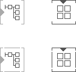
When changing a Container to an Interface Container, all exposed properties become interface properties. The difference between them is that interface properties remain defined on the interface even when the property is no longer exposed. All properties exposed after that automatically become interface properties as well.
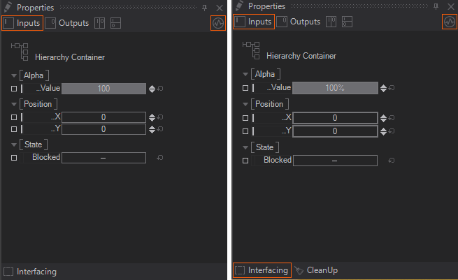
When removing a node that exposes a property, the interface property stays intact but is visualized in a light gray color. To remove an interface property definition, either double click on the interface property and press Exclude or use the CleanUp button at the bottom of the Property Editor to remove all interface properties without an corresponding exposing node.
Interface properties can be recognized by the thicker stroke around the green "exposing square" (when the exposing node is selected) or the thicker stroke around the property (when the container itself is selected). One has to be careful not to confuse what level of exposing one is currently looking at.
An interface property that is disconnected from its exposing node keeps its last valid value.
Expose Properties to an existing Interface
To expose a property to an existing Interface Property, click and select the desired interface property under the Expose... menu or click on the small square to the left of the property to pop-up a choice of existing interface properties. Please note that only interface properties of the correct type will be listed!
Replacing Interface Content
When using drag & drop with an Interface Container, all containers in the scene with an interface defined are highlighted with a dark gray border. When dragging the selected container over such an interface container, the target's border changes to red. Releasing in this state will not remove the original node but replace the targets content with that of the source node. The same behavior is achieved by using Edit/Copy and Edit/Paste Container Content from the main menu.
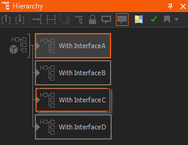
In addition, Ventuz will try to reconnect as many interface properties as possible via its Interface Matching Algorithm. Exposed and Interface Properties match each other if they fulfill the following requirements:
- Property Type must be identical: Input Value, Output Value, Method, Event
- If the type is Input or Output Value, the SubType must be identical
- (float, integer, string, matrix, …)
- Property Names must be identical.
- The names are compared case sensitive while the category is ignored.
Remember that property names starting with the same text as their category are displayed in the Property Editor without that leading portion: eg. "PositionX" in category "Position" is displayed as “…X”
This matching also works when dragging Interface Containers from the Repository. To improve the quality of automatic reconnection, ensure that all properties have unique names.
Layers as Interfaces
Layers may be turned to Interface Containers in a similar way as Hierarchy and Content Containers. Though, they are only capable of keeping an unexposed property so that bindings will not be lost. Their content cannot be replaced by that of other Interface Layers.
Repositories and Interfacing
Interface Containers can be used to easily change and update other instances by using the Repository. To do so you can create a Repository Item by dragging an Interface Container into an opened Repository. Now every new instance of this item will reference it and thus can be updated very easily. See Repositories for more information on how to exactly do that.